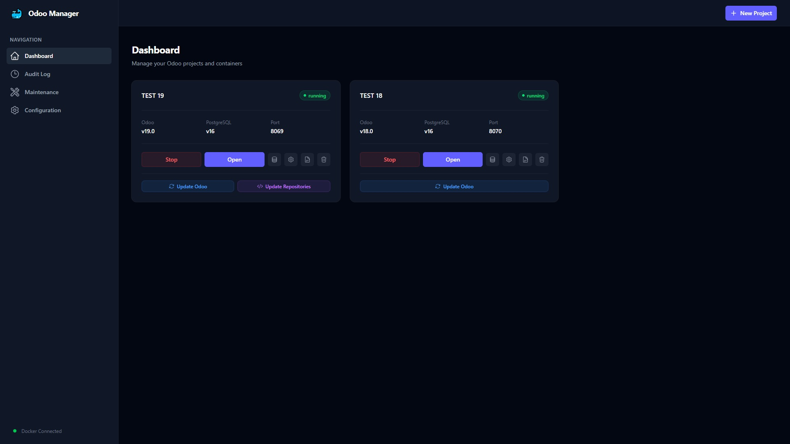
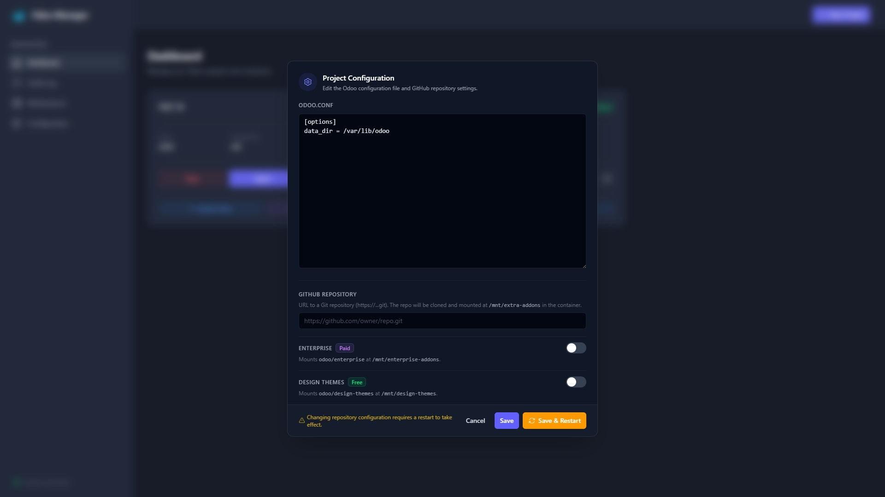

✨ Features
- Easy project management — create, start, stop, and delete Odoo projects with a few clicks
- Docker integration — automatic management of Odoo and PostgreSQL containers
- Real-time UI — live project status, spinner sync, and log streaming via Server-Sent Events (SSE)
- Database backup — one-click backup with real-time progress streaming and automatic download
- Audit log — full audit trail with real-time viewer, file logging, and scroll-back pagination
- Dark theme UI — modern, responsive interface built with Tailwind CSS and Heroicons SVGs
- Embedded frontend — all assets embedded in a single binary using Templ
- SQLite storage — ACID-compliant project persistence with automatic schema migrations
- Docker labels — containers labeled for reliable discovery and management
- Status reconciliation — auto-detects and corrects stale container states
- Idempotent operations — start/stop/delete actions are async, safe to repeat, and sync across browsers
- Docker health check — continuous monitoring with automatic UI overlay
- Connection recovery — automatic SSE reconnection with version-based reload
- ANSI color support — terminal colors rendered faithfully in log viewers
- GitHub repository integration — clone and mount custom addons repos with branch selection
- Enterprise & Design Themes — one-toggle support via GitHub PAT
- PAT validation — GitHub Personal Access Token validation at startup with status badge
- Update Odoo — pull latest Docker image and recreate container while preserving data
- Update repositories — git-pull all configured repos with smart restart
- Per-project configuration — edit odoo.conf and repository settings with Save & Restart
- Auto pip install — automatically installs Python dependencies from requirements.txt
- Portable Git (Windows) — auto-downloads MinGit on Windows
- Maintenance tools — clean orphaned Docker containers, volumes, networks, and images
- Reverse proxy aware — client IP detection via X-Forwarded-For and X-Real-Ip headers
- Fast & lightweight — minimal dependencies, quick startup
📋 Prerequisites
- Docker (with Docker daemon running)
- Git (optional — auto-downloaded as MinGit on Windows; install from git-scm.com on macOS/Linux)
⚡ Getting Started
-
Download — grab the binary for your platform from the downloads above.
-
Extract & run — on Linux/macOS:
tar xzf odoo-manager_*.tar.gz && ./odoo-manager. On Windows: extract the zip and run odoo-manager.exe.
-
Open the dashboard — navigate to
http://localhost:8080 in your browser.
-
Create a project — click "New Project", choose your Odoo version, and configure addons repos if needed.